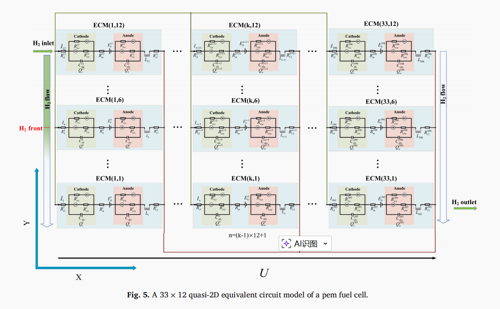
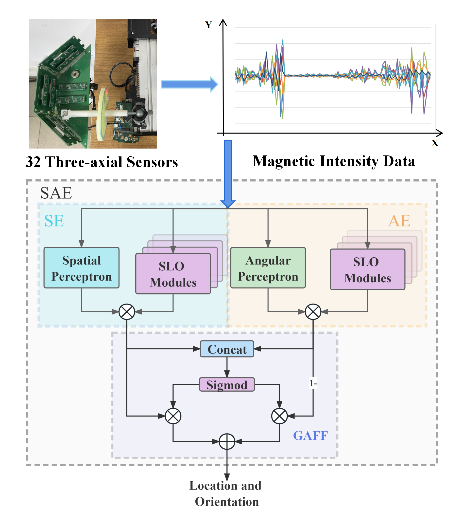

About

Senhua Zhang（张森华）
Automation · Embedded · Signal Processing
Linux Embedded Development & Signal Processing.
B.S. (Automation) · GDUT (Jul. 2024) · M.S. (Automatic Control) · UESTC (Chengdu)
I received the B.S. degree in automation from Guangdong University of Technology, China, in Jul.2024. I currently pursuing the M.S. degree in automatic control with the School of Automation Engineering, University of Electronic Science and Technology of China, Chengdu. My research interests include signal processing and machine learning.
- City: GuangZhou, China
- Email: senhua.zh@std.uestc.edu.cn
- Institution: University of Electronic Science and Technology of China
Technical Skills
Embedded Linux & System Development
- Proficient in C/C++, multi-threading, and concurrent programming with POSIX threads.
- Experienced in building embedded Linux systems: U-Boot, Kernel, Buildroot customization and porting.
- Skilled in system-level optimization (e.g., CPU isolation, memory management, low-latency design).
Hardware & Driver Development
- Familiar with ARM SoCs: Rockchip RK3588 (MPP), NVIDIA Jetson (TensorRT), Allwinner A33/A64.
- Developed and debugged drivers for UART, I2C, SPI, CAN, USB on Linux.
- Implemented inter-processor communication between SoC, MCU (STM32), PMIC, and BMS via custom protocols.
Deep Learning Deployment & Optimization
- Deployed CNN/gMLP models on edge devices using TensorRT, ONNX, OpenCV.
- Optimized inference latency (e.g., reduced point cloud processing time from 4.3ms to 0.03ms on Jetson Nano).
- Experience with SLAM (Fast-LIO2) and biomedical signal (ECG) model deployment.
Software Engineering & Toolchain
- Build systems: CMake, Make; Version control: Git.
- Cross-compilation toolchains, GDB debugging, and performance profiling.
- Service management via Systemd; OTA design with SHA256, rsync, rollback support.
Biography
Education
B.S., Automation
Guangdong University of Technology (GDUT)
- The First Prize Scholarship (Top 3%)
- Contemporary Undergraduate Mathematical Contest in Modeling 2021 (Guangdong) — Second Prize
- National Undergraduate Electronics Design Contest 2022 (Guangdong) — First Prize
- Mathematical Contest in Modeling 2022 — Honorable Mention
- China Undergraduate Computer Design Competition 2023 (Guangdong) — Second Prize
- Scholarship for Outstanding Student Leaders
M.S., Automation
University of Electronic Science and Technology of China (UESTC)
- "Huawei Cup" 21st China Post-Graduate Math Modeling Contest — Third Prize (2024)
- 2025 Huawei Embedded Software Competition — Top 12 in Southwest Region
- UESTC Second-Class Scholarship (2024–2025)
- Yanbao Corporate Scholarship (2024–2025)
Professional Experience
Electrocardiograph Development (Software Engineer)
- Complete driver development and deployment
- Full-stack development
- Neural network deployment
Non-contact Vital Signs Monitor (Software Engineer)
- Radar signal processing, filter design, digital signal processing
- Linux system porting, kernel tailoring, filesystem customization
- Full-stack development
Intern Experience
HITACHI (Software Engineer)
Industrial Technology Research Department
- Camera interface development
- Modobus, CAN, I2C interface development
- C++ software architecture development
ScanArk (Software Engineer Intern)
Hardware Department
- Embedded Linux development for handheld SLAM devices (RK3588)
- Implementing GStreamer hardware acceleration
- Production-grade OTA solutions
Selected Research

Reverse Current Evolution During Fuel Cell Start-Up: Integrating High-Resolution Segmented Current Measurement with Quasi-2D Equivalent Circuit Modeling
Senhua Zhang, Cong Yin.

Regional Perceptrons Ensemble for Permanent Magnetic Localization
Jun.L, Fei.Z, Senhua Zhang, etc.
Competitions
Ordering and Transportation of Raw Materials for Manufacturing Enterprises
- Implemented comprehensive evaluation
- Built linear programming optimization pipeline
- Achieved Guangdong Second Prize
Composition Analysis and Identification of Ancient Glass Products
- Implemented comprehensive evaluation
- Programmed decision tree, clustering, and sensitivity analysis
- Achieved Guangdong Second Prize
Maximizing Forest Benefits
- Implemented principal component analysis
- Built neural network prediction workflow
- Conducted sensitivity analysis and reporting
National Undergraduate Electronics Design Contest 2022
- Participated in hardware circuit debugging
- Built Linux system and customized filesystem tailoring
- Developed data communication protocols and HCI design